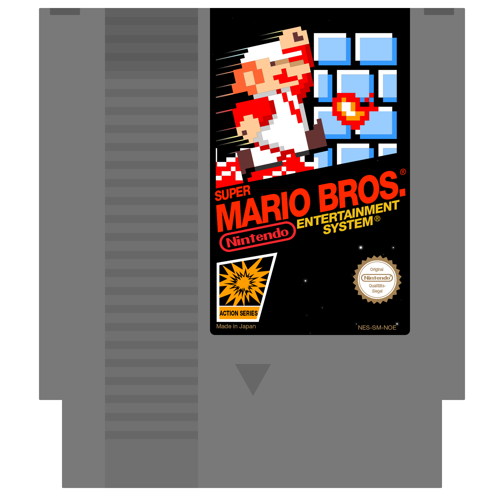
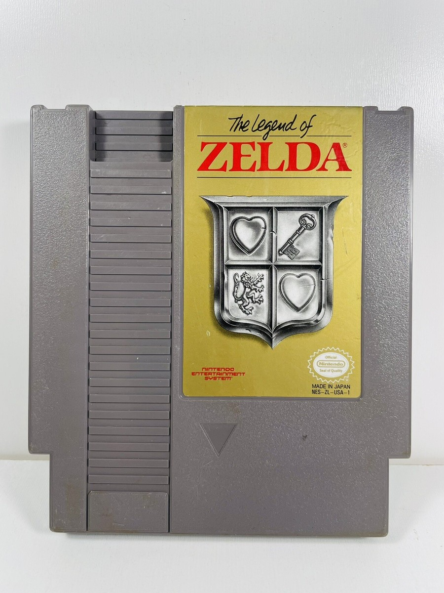

Aca podras encontrar el juego que siempre has buscado
Esto son los juegos que hay de momento

Super Mario Bros es un juego plataformero, donde tienes que ir por varios niveles para poder salvar a la princesa Peach de las manos de Bowser.

The Legend of Zelda es un juego de aventuras que te pone en los zapatos del protagonista, Link. Link tiene que ir navegando por el mundo para encontrar a la trifuerza, para derrotar a ganon y rescatar a Zelda.